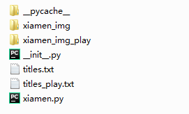

1. 爬取网站的地址：http://www.xmnn.cn/wap.shtml?tdsourcetag=s_pctim_aiomsg
2. 使用 Scrpay 和 requests，爬取标题和图片，将标题作为图片的名称
3. 创建一个 Scrapy 项目：
scrapy startproject XiaMen4. 在 spiders 文件夹下新建一个 xiamen.py 文件
5. xiamen.py 下的代码：
import scrapy
from ..items import XiamenItem
import requests
# import time
# import random
class XiamenSpider(scrapy.Spider):
name = 'xiamen'
# allowed_domains = ['www.xmnn.cn']
start_urls = ['http://www.xmnn.cn/wap.shtml?tdsourcetag=s_pctim_aiomsg']
def parse(self, response):
headers = {
'User-Agent': 'Mozilla/5.0 (Windows NT 6.1; WOW64; rv:6.0) Gecko/20100101 Firefox/6.0'
}
# 爬取主要版块的标题和图片并打印标题
lists = response.css('.list-news.clearfix')
for li in lists:
item = XiamenItem()
item['title'] = li.css('h1::text').get()
print(item)
with open('titles.txt', 'a') as f:
f.write(str(item) + '\n\n')
item['img_url'] = li.css('.lazy::attr(data-original)').get()
if item['img_url']:
url = 'http:' + item['img_url']
r = requests.get(url, headers=headers)
try:
# 由于某些标题带有特殊字符不能作为图片名称，所以改变特殊字符，这里主要换两个
if '"' or ':' in item['title']:
item['title'] = item['title'].replace('"', '', 10)
item['title'] = item['title'].replace(':', '', 10)
with open('./xiamen_img/%s.jpg' % item['title'], 'wb') as f:
f.write(r.content)
# sleep_time = random.randint(0, 2) + random.random()
# time.sleep(sleep_time)
except OSError:
pass
# 爬取轮播图标题和图片并打印标题
lists_play = response.css('.bd li')
i = 0
for li in lists_play:
item_play = XiamenItem()
item_play['title_play'] = li.css('p::text').get()
print(item_play)
with open('titles_play.txt', 'a') as f:
f.write(str(item_play) + '\n\n')
item_play['img_url_play'] = li.css('img::attr(src)').get()
if '//' in item_play['img_url_play']:
url = 'http:' + item_play['img_url_play']
else:
url = 'http://www.xmnn.cn/' + item_play['img_url_play']
r = requests.get(url, headers=headers)
# 某些图片没标题，用数字命名
if not item_play['title_play']:
item_play['title_play'] = i
i += 1
try:
with open('./xiamen_img_play/%s.jpg' % item_play['title_play'], 'wb') as f:
f.write(r.content)
except OSError:
pass6. items.py 下的代码：
import scrapy
from scrapy import Field
class ImagepixItem(scrapy.Item):
# define the fields for your item here like:
# name = scrapy.Field()
title = Field()
id = Field()
url = Field()7. 在 spiders 文件夹下新建 xiamen_img 和 xiamen_img_play 文件夹
8. 命令行下切换到 spiders 目录，然后输入如下运行爬虫
scrapy crawl xiamen9. 结果：
存储的文件：

xiamen_img 文件夹下的图片：